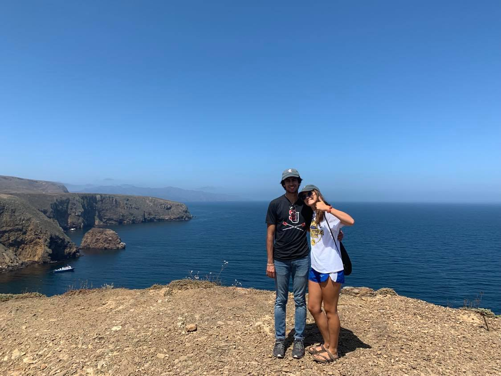
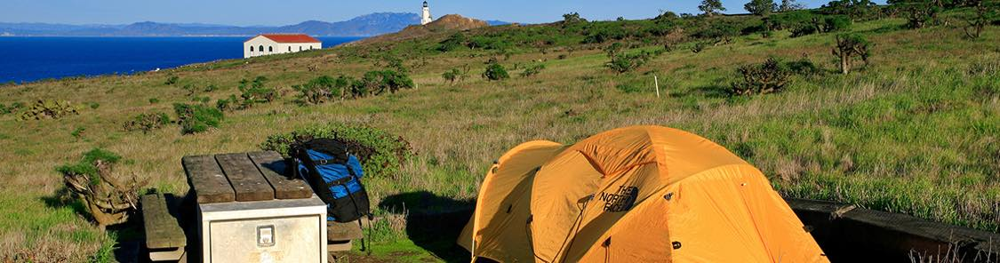
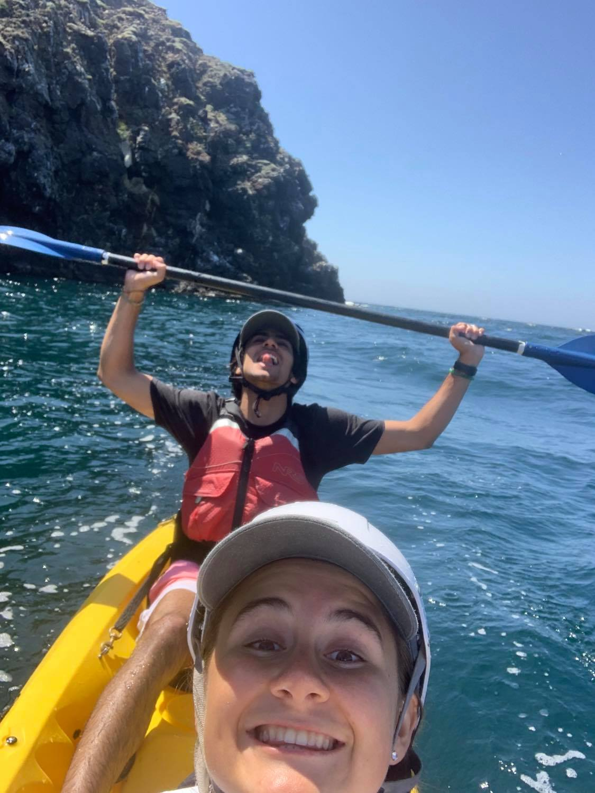
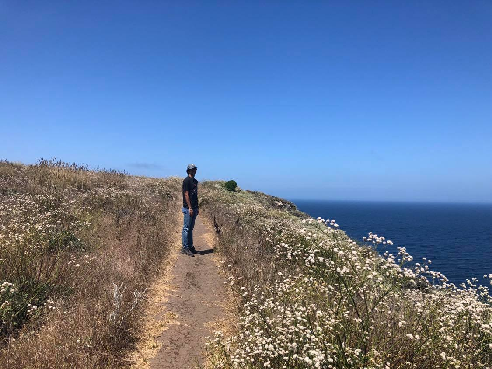

CALIFORNIA: WEST SECTION


West California has the big cities like LA and Santa Barbara, but it also has a beautiful and secluded National Park that many people don't know about.
Channel Islands National Park is about a 40 minute ferry ride away from Santa Barbara. This park is a hidden gem and I definitely think it is a sight to see in the LA area!
There are all kinds of activities that you can do on the island: kayaking, hiking, camping, swimming, and relaxing.
CHANNEL ISLANDS NATIONAL PARK
There are hikes for all levels so check out the link to see which trail and difficulty you would like to do.
Channel Islands Trails


I did the kayaking tour with my friend and we had a blast! The tour on the island takes you through caves and around the cliffs. The water is crystal clear; it seriously made me feel like I was on an island in Hawaii but its just right outside of the city!
If you are feeling less energetic, go check out the beach on the island. The water was the perfect temperature to go swimming during the summer. There are two beaches on the island: one when you reach the island on the ferry and another on the other side, but you have to hike there.
Back to Home